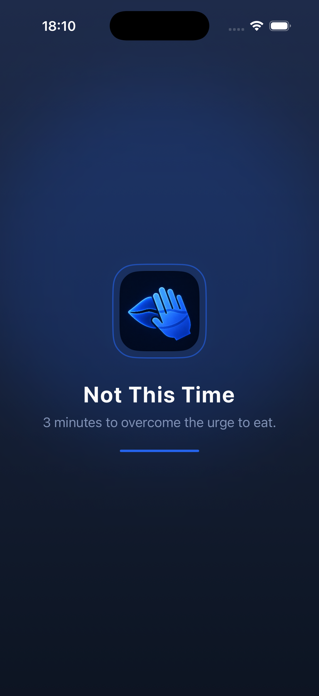
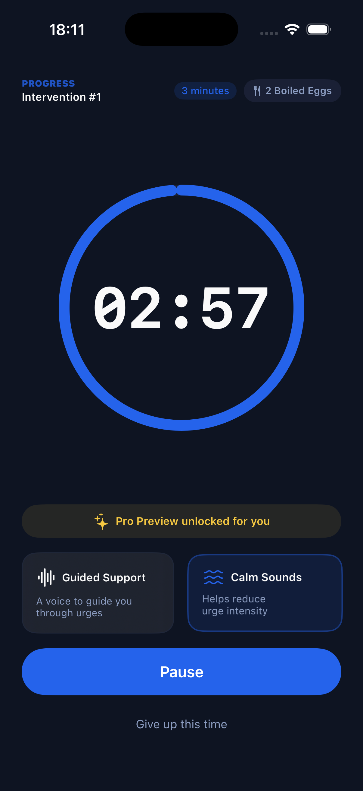

1
Name the urge
Labeling the craving helps create distance between the feeling and the next action.
Health / Mindful Eating for iOS
Not This Time helps you ride out the moment when you want to eat but wish you could wait. Choose something safe, start a 3-minute countdown, and let the urge pass like a wave.

The science
Urge surfing is a mindfulness-based technique: instead of fighting an urge or obeying it instantly, you notice it, stay with it, and let its intensity rise and fall. Not This Time turns that idea into a simple 3-minute pause.
Labeling the craving helps create distance between the feeling and the next action.
A short countdown gives your brain a concrete alternative to acting immediately.
Many urges peak and soften within minutes when you stop feeding them with urgency.
Why it works
Cravings often feel urgent because they demand action right now. Not This Time is built for that exact moment: no journaling, no social feed, no shame. Just a short, structured pause.
The free timer helps you stay with the urge long enough for its intensity to drop. It is a self-support tool, not a medical treatment or a replacement for professional care.

How it works
The flow is intentionally short because the app is meant to be used while the urge is active.
Start by naming a calmer option. This creates a small gap between the craving and the action.
Use the free countdown and ticking sound to stay anchored while the craving wave moves through.
When the timer ends, check in again. You may still choose to eat, but you are no longer reacting instantly.
FAQ
This section is plain HTML, so it can be edited directly whenever the product message changes.
Not This Time is an iOS app for people who want to pause before acting on a food craving. It uses a simple 3-minute timer inspired by urge surfing.
It is designed for people managing weight loss, mindful eating, late-night snacking, emotional eating, or moments when they want support before eating impulsively.
Yes. The basic 3-minute countdown and ticking sound are available for free. Optional Pro features include white noise, voice guidance, and longer timer options.
No. Not This Time is a self-support tool for pausing during cravings. It is not a medical device and does not diagnose, treat, or cure eating disorders or other health conditions.
No. The app is designed to work without an account, cloud sync, or a social feed.